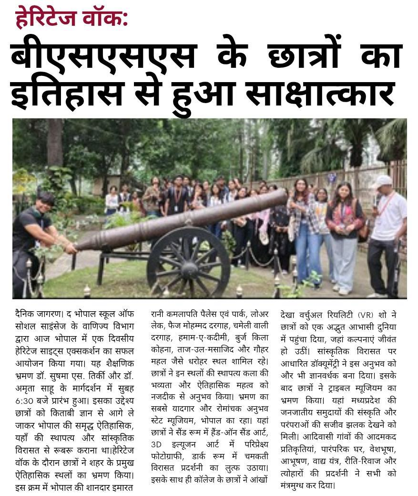

Heritage Walk
BSSS students come face-to-face with history
Rani Kamlapati to Taj-ul-Masajid — a journey through Bhopal’s heritage

BSSS students on the heritage trail across Bhopal, as reported in Dainik Jagran.
Bhopal: In a step towards blending academics with experiential
learning, the Department of Commerce, Bhopal School of Social Sciences (BSSS) successfully
organized a one-day Heritage Sites Excursion in Bhopal. The educational trip began at
6:30 AM under the able guidance of Dr. Sushma S. Tirkey and
Dr. Amrita Sahu.
The objective of the excursion was to take students beyond bookish knowledge and give them a first-hand,
immersive encounter with Bhopal’s rich historical, architectural, and cultural heritage.
Tracing the city’s historic landmarks
During the heritage walk, students explored several of the city’s most iconic and historically significant sites:
Rani Kamlapati Palace and Park
Lower Lake
Faiz Mohammad Dargah
Chameli Wali Dargah
Hamam-e-Qadeemi
Burj Kila Kohna
Taj-ul-Masajid
— one of India’s largest mosques
Gohar Mahal
— known for its striking blend of Hindu and Islamic architecture
At each stop, students engaged closely with the architectural grandeur and historical depth of these landmarks, gaining a deeper appreciation of Bhopal’s layered past.
A journey through the State Museum
The most memorable and exciting part of the excursion was the visit to the State Museum, Bhopal, where students experienced a range of interactive and immersive exhibits:
Hands-on Sand
Art in the Sand Room
Perspective
Photography in the 3D Illusion Art section
A dazzling heritage
display in the Dark Room
A documentary on
cultural heritage
The “Aankhon Dekha” Virtual Reality Show
…which transported students into an extraordinary virtual world where imagination came vividly to life.
Exploring the Tribal Museum
The excursion continued with a visit to the Tribal Museum, offering a vivid and moving glimpse into the culture and traditions of Madhya Pradesh’s tribal communities:
Life-size replicas of
tribal village life
Traditional houses and dwellings
Traditional attire and ornaments
Musical instruments
Displays of customs,
rituals, and festivals
The vivid presentation of tribal heritage left students thoroughly captivated and enriched their
understanding of the state’s indigenous communities.
This heritage walk gave BSSS students a rare and meaningful opportunity to connect with history, art, and
culture outside the traditional classroom setting — reflecting the institution’s ongoing
commitment to experiential and value-based learning.
A 6:30 AM Start
A full one-day excursion that moved the classroom out into the city itself.
Eight Landmarks
From Rani Kamlapati Palace to Taj-ul-Masajid and Gohar Mahal in a single route.
Aankhon Dekha VR
The State Museum’s VR show named the most memorable part of the day.
Tribal Heritage
Life-size replicas, attire, instruments and rituals at the Tribal Museum.
Source: Dainik Jagran, Bhopal. Account of the excursion by the Department of Commerce, Bhopal School of Social Sciences.